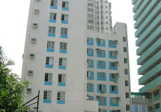

职业卫生
院长信箱
加入收藏
官网
耳鼻咽喉头颈外科
广州市职业卫生信息网
网站首页
医院概括
就医指南
新闻中心
专科介绍
专家介绍
网上咨询
健康知识
党群工作
护理天地
新闻中心
news
医院新闻
媒体报道
院内活动
就医指南
开诊科目表
开诊时间表
专家出诊表
方位指南
住院病人就诊流程
门急诊就诊流程
预约挂号
楼层指引
你现在的位置: 首页 > 医院概括 >
医院概括
集团简介

2014-01-02
医院坐落于广州市黄埔大道西
2014-01-02
天河城西南面的广州市第十二人民医院是由
2014-01-02
有三十余年历史的广州市职业病防治院发展
2014-01-02
为一间三级综合性医院
2014-01-02
有三十余年历史的广州市职业病防治院发展
2014-01-02
医院坐落于广州市黄埔大道西
2014-01-02
天河城西南面的广州市第十二人民医院是由
2014-01-02
有三十余年历史的广州市职业病防治院发展
2014-01-02
为一间三级综合性医院
2014-01-02
观音岩景区旅游渐入佳境江湾大酒店组织全体员工乡村游
2014-01-02
三清集团荣获全国企业文化优秀成果奖
2014-01-02
上饶国旅荣获2012年度全省旅行社经营业绩“二十佳”观音岩景区迎来大型自驾游
2014-01-02
靖安县田辉县长视察三爪仑旅游工作三清集团荣获全国企业文化优秀成果奖
2014-01-02
观音岩景区种菜养殖丰富员工餐桌鹰潭多家旅行社组团“踩线”三爪仑
2014-01-02
三爪仑旅游推荐会走进浙江龙游玉山县饶清华县长调研琴山旅游度假区项目
2014-01-02
胡三红副县长实地考察三爪仑旅游项目建设进展
2014-01-02
三爪仑核心资源整合开发项目指挥部赴明月山考察高山小火车
2014-01-02
观音岩景区旅游渐入佳境江湾大酒店组织全体员工乡村游
2014-01-02
三清集团荣获全国企业文化优秀成果奖
2014-01-02
上饶国旅荣获2012年度全省旅行社经营业绩“二十佳”观音岩景区迎来大型自驾游
2014-01-02
靖安县田辉县长视察三爪仑旅游工作三清集团荣获全国企业文化优秀成果奖
目前在第
1
页,
共有
3
页,
共有
3
条记录
首页
上一页
1
2
3
下一页
末页
跳转到
页
地址：
医院电话： XXX 传真： XXX 粤ICP备00000000号
流量统计
|
网站地图
|
法律申明
|
友情链接
Copyright 2020 All Rights Reserved © .ed by